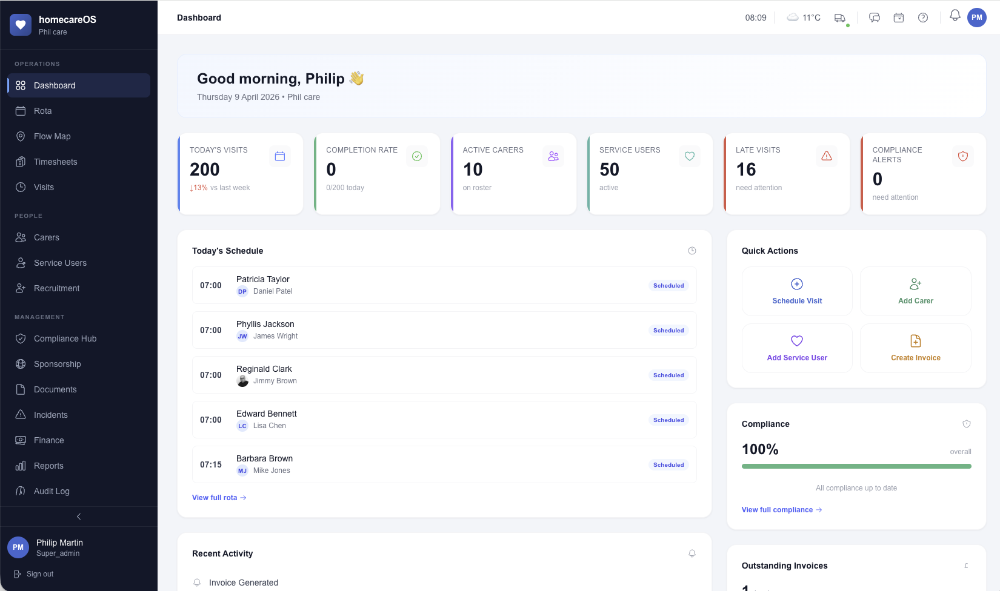

Transparent Provider Performance, Real-Time
Give local authorities and NHS commissioners the visibility they need to monitor commissioned services, track outcomes, and hold providers to account — without chasing spreadsheets or waiting for quarterly reports.
Commission with Confidence, Monitor with Clarity
Evidence-based commissioning replaces spreadsheets and trust. The Commissioner Portal gives local authorities and NHS commissioners a dedicated, real-time window into provider performance — visit completion, outcome delivery, spend tracking, and incident visibility — all without needing to request a single report. Commission smarter, intervene earlier, and ensure every pound of public funding delivers the care it was intended for.

What Commissioners Actually Need
Not another provider portal dressed up as transparency. Real tools designed around the way local authorities and NHS commissioners actually work.
Outcome Dashboards
Real-time visibility into provider performance against commissioned outcomes. No more quarterly spreadsheet reviews.
Visit Monitoring
See visit completion rates, punctuality, missed visits, and cancellation patterns across all commissioned service users.
Automated Reporting
Scheduled reports delivered automatically. Monthly, quarterly, or on-demand — in the format your authority requires.
KPI Tracking
Define and track key performance indicators. RAG-rated dashboards highlight underperformance before it becomes a safeguarding concern.
Audit Trails
Complete, immutable records of every visit, care note, and incident. Full transparency for quality assurance reviews.
Spend Visibility
Track commissioned hours against actual delivery. Understand spend patterns and identify over/under-delivery.
Complete Commissioner Toolkit
Everything commissioners need to monitor providers, track outcomes, and ensure public funding delivers real results.
Real-time outcome dashboards
Live dashboards showing provider performance against commissioned outcomes, updated automatically as visits are completed and care is recorded.
Visit completion and punctuality rates
Track what percentage of commissioned visits are completed on time, with drill-down by service user, carer, or time period.
Missed visit and cancellation tracking
Immediate visibility into missed visits and cancellations — with reasons, patterns, and trend analysis to identify systemic issues early.
KPI definition and monitoring
Define your own key performance indicators and thresholds. The system tracks them continuously and alerts you when providers fall below target.
RAG-rated performance indicators
Red, amber, green status indicators across all metrics so you can spot underperformance at a glance without reading a single spreadsheet.
Automated report scheduling
Set up monthly, quarterly, or custom reporting schedules. Reports are generated and delivered automatically — no manual requests needed.
Formatted report exports
Export reports in the formats your authority requires — PDF, CSV, or structured data — ready for internal review or committee papers.
Spend vs commissioned hours analysis
Compare what was commissioned against what was actually delivered. Identify over-delivery, under-delivery, and budget variance in real time.
Service user outcome tracking
Monitor individual service user outcomes over time — from care plan goals to wellbeing indicators — ensuring commissioned care delivers real results.
Incident and safeguarding visibility
Full transparency into reported incidents, safeguarding referrals, and follow-up actions — with complete audit trails for every event.
Quality assurance audit trails
Every visit, care note, medication administration, and incident is immutably recorded — providing a complete evidence base for quality reviews.
Multi-provider comparison views
Compare performance across multiple commissioned providers side by side — ideal for framework reviews, re-commissioning decisions, and benchmarking.
Evidence-Based Commissioning
Replace manual data requests and quarterly reviews with continuous, real-time provider monitoring.
See How homecareOS Supports Commissioners
Book a personalised demo and discover how the Commissioner Portal gives you real-time visibility into provider performance and commissioned outcomes.